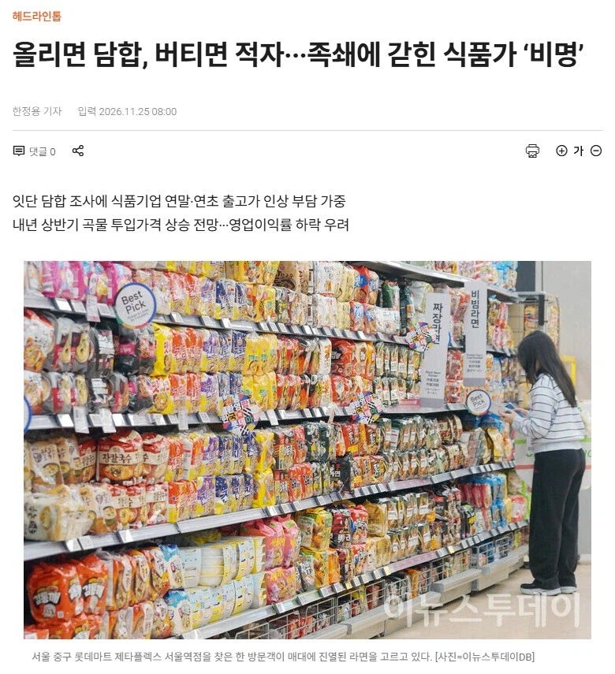

원재료값 내려도 인하한 적은 없지만 인상은 5G속도로 올리던 놈들이?

원재료값 내려도 인하한 적은 없지만 인상은 5G속도로 올리던 놈들이?
담합하지말고 눈치싸움으로 제일 늦게 올리는놈이 점유율 올리는거야 병신들아
‘이뉴스투데이’
연예부출신인가? 왤케 멍청한말을하냐
오르면 원재료탓, 내리면 다른 변명ㅋㅋㅋ
담합을 안 하면 못 올림?
진짜 담합을 했잖아요 븅신들아
간부진 봉급을 낮춰 쓉새끼들아
그동안 담합으로 다 쳐먹어놓고
내려야할때 안내리고 오를명분으로만 올려서이득본 몇십년간의 이익 수십 수백퍼센트는 모르쇠하며ㅋㅋ
자기들이 해온짓이있으니까 못올리는거지 ㅋ
5g 속도로 올린거면 느리게올렸다는건데 뭔가 오류가있는거같습니다
진짜 담합해서 올린다음에 이악물고 곧죽어도 안내리는 놈들이ㅋㅋㅋㅋ 개역겹네
내린적이 없으니까 그렇지 씨발새끼들 진짜 이딴것도 기사라고
이런거 보면 정유사는 진짜 양심적인거 같다 .... 국제 유가가 내리면 천천히라도
기름값을 낮추기라도 하잖아 ..... ㅋㅋㅋ
?? 유가오를땐 오밤중에 뉴스뜨면 다음날 아침에 올리고 내릴땐 재고 소진해야된다고 천천히 내리는게 앙심적인건가?
아예 안내리는 놈들 천지잖아 .... 라면, 과자도 저 위에 만화 처럼 오른다음에는 아예 안내리잖아 ...
진짜 담합했잖아 ㅅㅂㅋㅋㅋ
평소에 잘했어야지
그지같은 돈처먹은 광고지를 뉴스라고 내는 새끼들도 큰 문제야
구라치네 경제지 새끼들 또 기업에 돈 쳐받았구만
광고비 달달하다 그죠?
이런 개 좆같은 언론플레이에 쓸돈은 있고 그지?
ㅋㅋ
마린블루스 작가 요즘은 뭐하나..
지금쯤 자고있지않을까
내릴 땐 조용하고 올릴 땐 빠르긴 함
이미 충분히 올렸다 그만좀해
근데 원자재값올라도 존나눈치버면서 올리는것도 맞긴함 커피값같은경우도 원두값 올랐다고 말 ㅈㄴ많았는데(아아용 원두, 레쓰비용 저가원두말고)
아아 1500원에서 1800원된시기가 그 원두값올라간 시기보다 한참 늦음
경제지 보면서 원자재값 곁가지로 보는 편인데 올라도 바로안올리고 눈치보면서 올리는 경우가많음
대신 절대 안내리고 ㅇㅇ
메뉴 비용 때문이지
원자재 가격변동 할때마다 가격을 바꿀수 없으니까
한번 기회올때 올리는거고 그 사이에 물가가 오르니 못내리는거임
울버린 당했다는줄알고 뭔 병신겜이지 했네
지랄하고있네 기사를 시발 개버러지같은 년이
올리니 담합? 지금까지 자유경쟁이었는데 담합으로 매도하는것처럼 쳐적어놨네
단톡방에서 가격통제하는게 담합 아니냐 cj개간년들아?
그동안 쳐올린거 롤백단한번도 한적없다가 담합 쳐걸리고 존나 몇십원 내린거 장난치나
한류때문에 수출도 늘고 흑자도 늘고 있는데 개 씨발련들이 지랄병이네
코스피 두배가 올라도 주식은 반토막 내고 염병할놈들 퉷
원재료 오르는건 바로 올리면서
내려가면 죽어도 안내리면서 ㅈㄹ ㅋㅋㅋㅋㅋㅋ
가격 안내리고 걍 죽든가 ㅋㅋㅋㅋ
담합 걸린지 얼마나됐다고 저런 기사가 올라오네
적자 같은 소리 하네
애초에 가격을 안내리는데 언플까지 하네 개같은 것들이야
소비자를 ㅈ호구로 보니까 담합얘기를 꺼내는 거겠지?
과대포장에 쓸 돈을 절약하면 되잖아
지~랄병
댓글만 봐도 내수기반 식품기업 투자하면 안되는 이유가 선명하네
죽여벌고싶다 진짜 ㅋㅋ
아무말이나하네 ㅋㅋㅋ
안미안한가
개 염병떨기 시작하면 수입물품을 와장창 풀어서 저런 개소리의 씨를 말려야 함
적자좀 봐라 까짓거
판관비줄이면 되지
사실 보통 저런 가격 인상은 다른 부대비용이 높아진건데, 원자재비가 올랐다는 핑계로 같이 올리는거라 원자재비 내려가도 잘 안내려가는게 보통임..
단합은 제외
제목만 봐도 경제지 기사인거 너무 티난다
이 정도면 기자가 고소미로 돈 벌려는 거 아님?